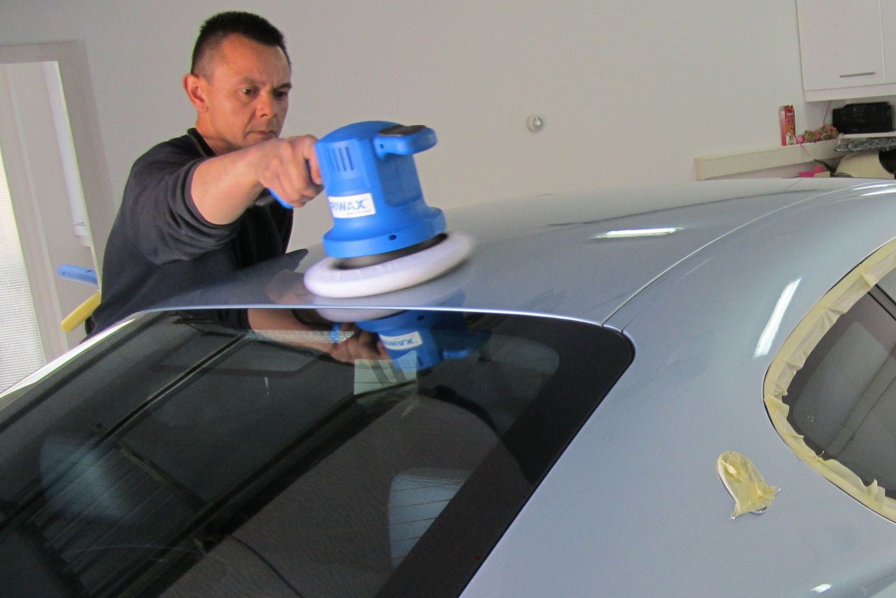
Uw auto met de hand gepoetst, bij u op locatie
Mobiel autowas- en poetsbedrijf sinds 2010. Geen wasstraat en geen krassen: wij komen naar u toe, thuis of op het werk.
Geen gedoe met de wasstraat, wij komen naar u toe
Wassen kost veel tijd en energie. Wij reinigen uw (bedrijfs)auto ter plaatse of op een andere plek die u kiest, op een milieuvriendelijke manier.
Tijdbesparend
Geen wachttijden en niet heen en weer rijden naar de wasstraat.
Kostenbesparend
Geen kosten en verloren arbeidstijd door transport.
Flexibel
U bepaalt zelf de tijd en de plaats.
Handmatig
Met de hand gewassen, dus geen krassen zoals in een wasstraat.
Kies wat bij uw auto past
Van een snelle wasbeurt tot een complete reconditionering van binnen en buiten.
Handy Wash
ExterieurProfessioneel wassen van de buitenkant.
- Wielkasten schoonspuiten
- Velgen reinigen
- Handmatig wassen en droogzemen
Perfect Clean
InterieurDe complete reiniging van het interieur.
- Bekleding, hemel en vloer reinigen
- Kunststof weer op kleur
- Ramen binnenkant en sponningen
- Stofzuigen, incl. kofferbak
VIP
Binnen + buitenWassen van het exterieur en interieur.
- Velgen en wielkasten
- Handmatig wassen en droogzemen
- Ramen binnen en buiten
- Stofzuigen, roosters en dashboard
VIP +
Binnen + buitenDe VIP-behandeling, met een extra beschermlaag.
- Alles uit de VIP-behandeling
- + Handmatig aangebrachte waxlaag
Silverstar
ExterieurWassen, polijsten en in de wax.
- Velgen en wielkasten
- Handmatig wassen en droogzemen
- Exterieur polijsten
- Handmatig aangebrachte waxlaag
Goldstar
CompleetDe complete behandeling voor uw auto.
- Wassen, polijsten en waxlaag
- Ramen binnen en buiten
- Bekleding, hemel en vloer reinigen
- Kunststof op kleur, stofzuigen incl. kofferbak
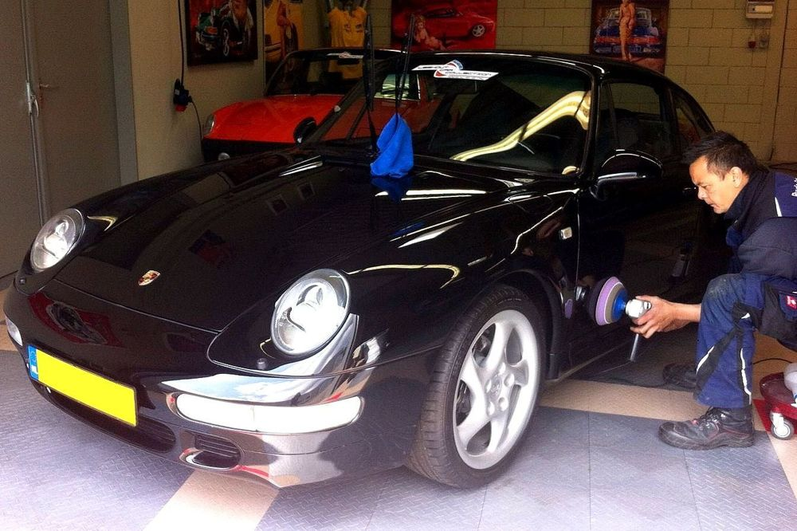
Langdurige glans en een harde beschermlaag
Nanopur brengt een hoogwaardige matrixlaag aan op basis van 3D-technologie. De lak wordt harder, vuil hecht minder en uw auto blijft langer mooi.
- Extreem langdurige glans
- Hoogwaardige lakbescherming, vuil is makkelijker te verwijderen
- Extreem waterafstotend effect na de behandeling
- Inclusief wassen, velgen reinigen en polijsten vooraf
Nanopur mag alleen door een professional worden aangebracht.
Afspraak makenOok als het hopeloos lijkt
Kleine krasjes poetsen we weg met professionele machines. En ook bij flink vervuilde bekleding weten we vaak nog veel te redden.
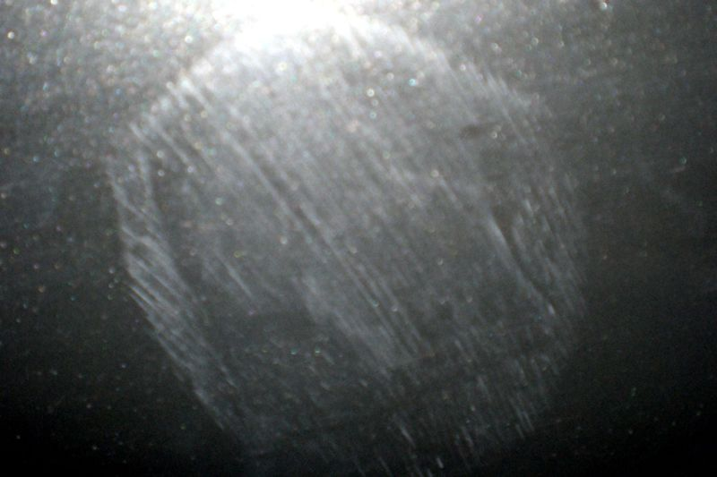
Voor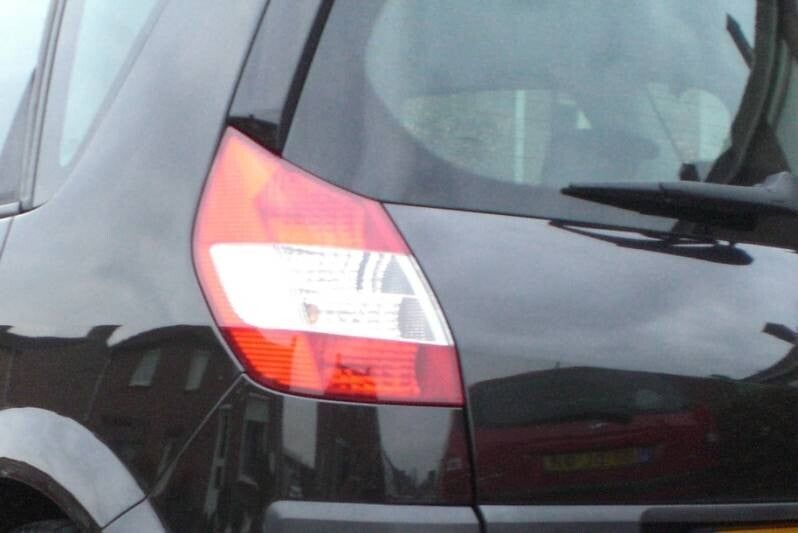
NaLakschade door een leren bal
Kleine, diepe krassen maken de lak na een paar jaar dof. Met poetsen is dat op te lossen.
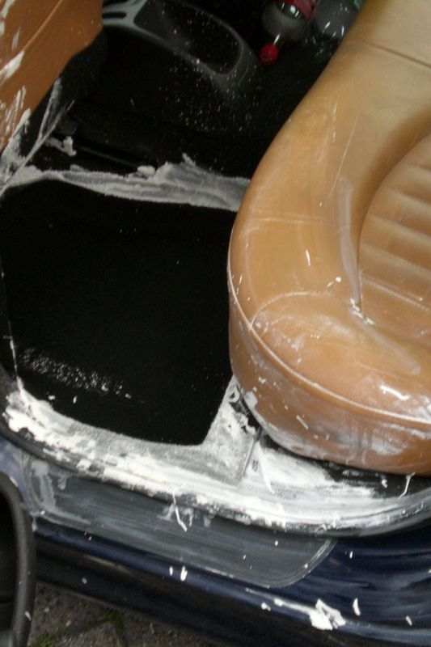
Voor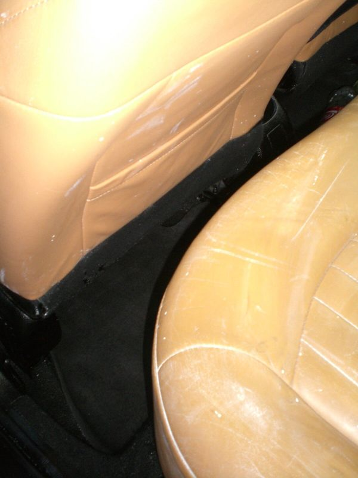
NaLatex op het interieur
Latex krijg je lastig uit de bekleding. Met een grondige reiniging gaat het grotendeels weg.
Van sportwagen tot touringcar
Sinds 2010 hebben we van alles gepoetst. Ook voor bedrijfswagens, bruidswagens, vrachtwagens, boten, caravans, campers en touringcars kunt u bij ons terecht.
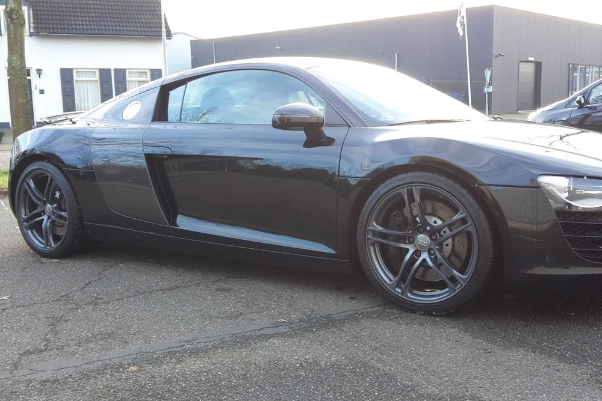
Auto's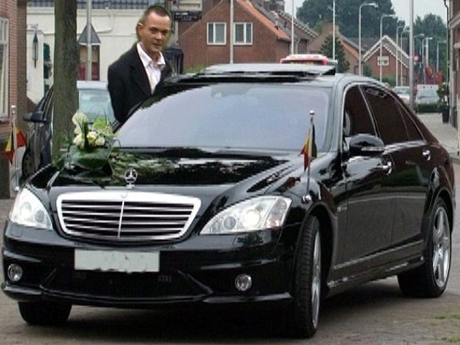
Bruidswagens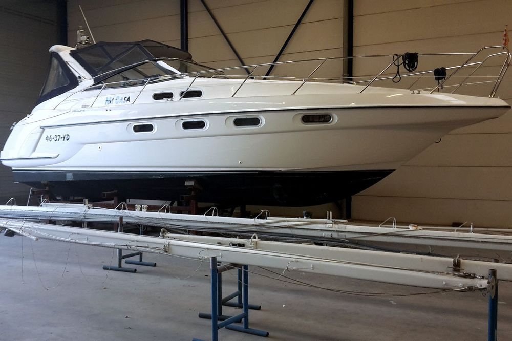
Boten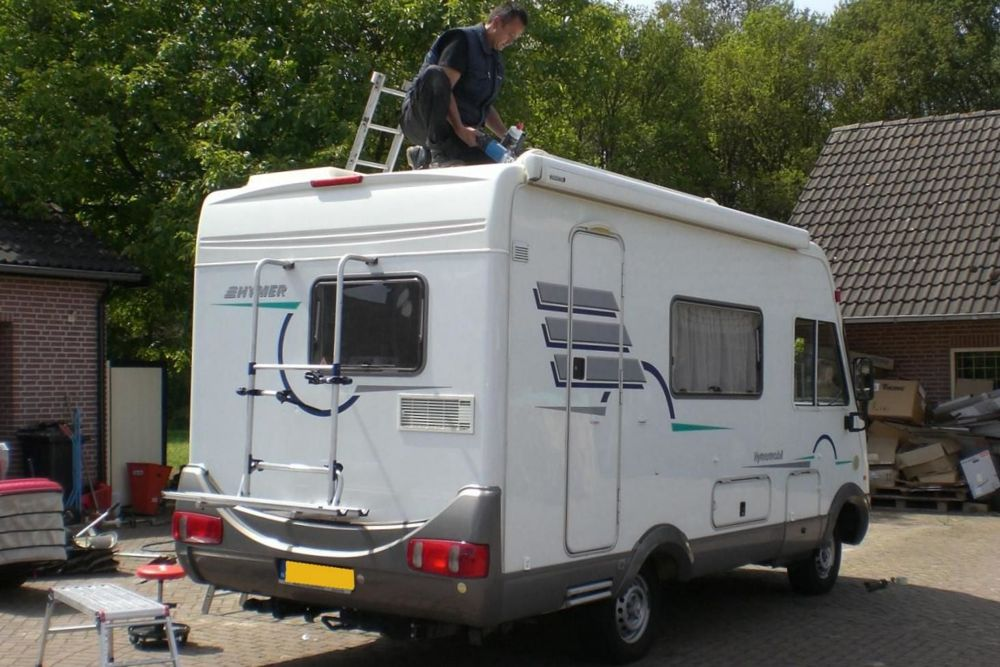
Campers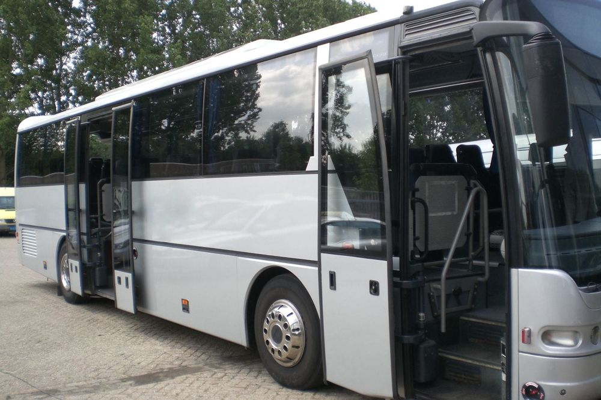
Touringcars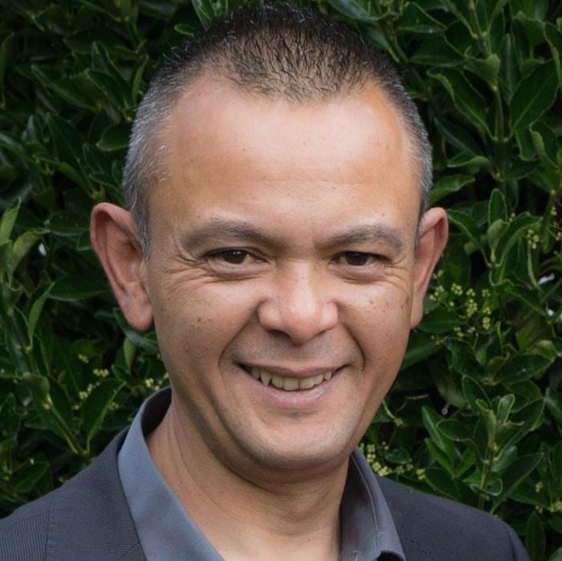
Vakwerk, met de hand
Ruud startte Ruud's Car Cleaning in maart 2010. Sindsdien poetsen we voor particulieren en bedrijven, nieuwe en gebruikte auto's, van binnen en van buiten.
Alles gebeurt met de hand, zodat er geen schade ontstaat zoals in een automatische wasstraat. Voor kleine krasjes gebruiken we professionele poetsmachines, zodat de kwaliteit altijd gelijk is. Het resultaat: een auto die er weer als nieuw uitziet.
Afspraak maken
Bel of stuur een WhatsApp. Voor alle behandelingen geldt: prijs op aanvraag.
- Laat weten welke behandeling u wilt
- We spreken een tijd en plek af
- Wij komen naar u toe en poetsen ter plaatse
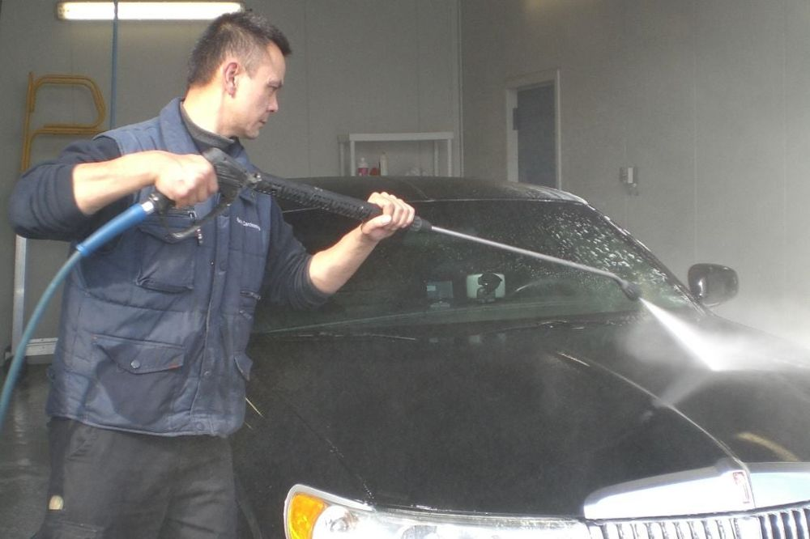
Contact
Bellen of WhatsApp
Wij komen naar u toe, thuis of op het werk